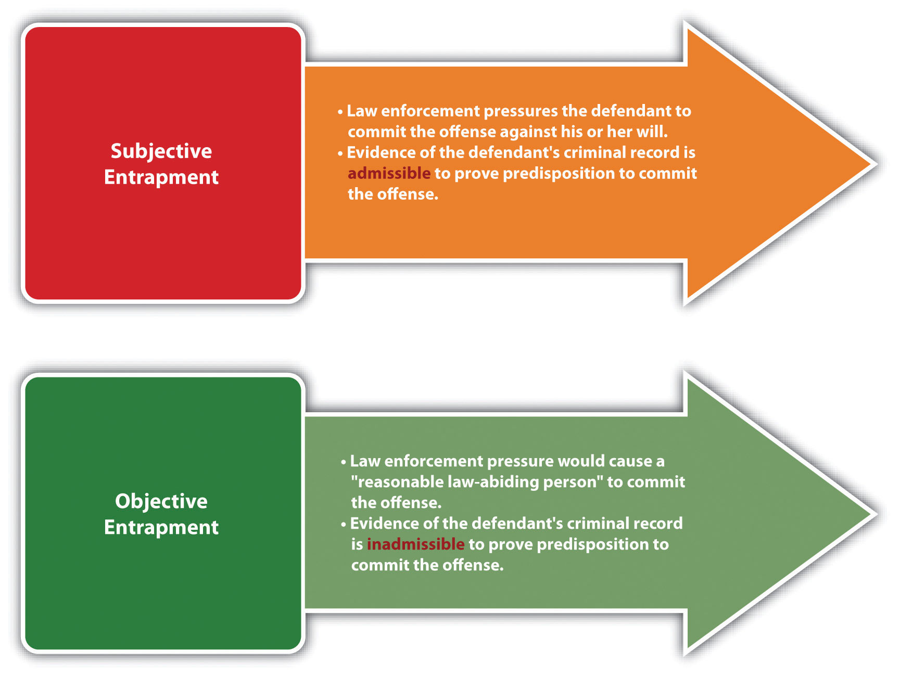
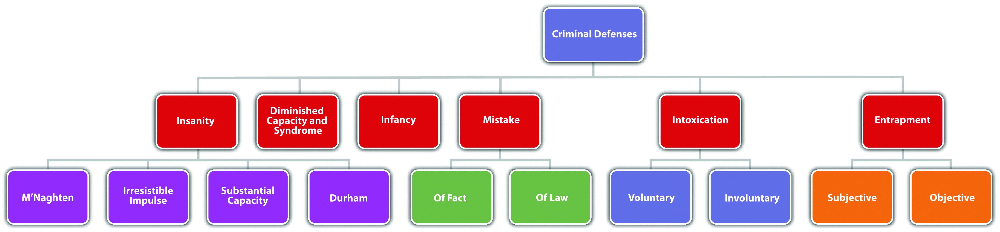

Historically, no legal limit was placed on the government’s ability to induce individuals to commit crimes. The Constitution does not expressly prohibit this governmental action. Currently, however, all states and the federal government provide the defense of entrapmentA defense that asserts the requisite intent for the crime originated with the government or law enforcement, not the defendant.. The entrapment defense is based on the government’s use of inappropriately persuasive tactics when apprehending criminals. Entrapment is generally a perfect affirmative statutory or common-law defense.
Entrapment focuses on the origin of criminal intent. If the criminal intent originates with the government or law enforcement, the defendant is entrapped and can assert the defense. If the criminal intent originates with the defendant, then the defendant is acting independently and can be convicted of the offense. The two tests of entrapment are subjective entrapmentLaw enforcement pressures the defendant to commit a crime against his or her will. and objective entrapmentLaw enforcement uses tactics that would induce a reasonable, law-abiding person to commit a crime.. The federal government and the majority of the states recognize the subjective entrapment defense.Connecticut Jury Instruction on Entrapment, Based on Conn. Gen. Stats. Ann. § 53a-15, accessed December 10, 2010, http://www.jud.ct.gov/ji/criminal/part2/2.7-4.htm. Other states and the Model Penal Code have adopted the objective entrapment defense.People v. Barraza, 591 P.2d 947 (1979), accessed December 10, 2010, http://scholar.google.com/scholar_case?case=4472828314482166952&hl=en&as_sdt=2&as_vis=1&oi=scholarr.
It is entrapment pursuant to the subjective entrapment defense when law enforcement pressures the defendant to commit the crime against his or her will. The subjective entrapment test focuses on the defendant’s individual characteristics more than on law enforcement’s behavior. If the facts indicate that the defendant is predisposed to commit the crime without law enforcement pressure, the defendant will not prevail on the defense.
The defendant’s criminal record is admissible if relevant to prove the defendant’s criminal nature and predisposition. Generally, law enforcement can furnish criminal opportunities and use decoys and feigned accomplices without crossing the line into subjective entrapment. However, if it is clear that the requisite intent for the offense originated with law enforcement, not the defendant, the defendant can assert subjective entrapment as a defense.
Winifred regularly attends Narcotics Anonymous (NA) for her heroin addiction. All the NA attendees know that Winifred is a dedicated member who has been clean for ten years, Marcus, a law enforcement decoy, meets Winifred at one of the meetings and begs her to “hook him up” with some heroin. Winifred refuses. Marcus attends the next meeting, and follows Winifred out to her car pleading with her to get him some heroin. After listening to Marcus explain his physical symptoms of withdrawal in detail, Winifred feels pity and promises to help Marcus out. She agrees to meet Marcus in two hours with the heroin. When Winifred and Marcus meet at the designated location, Marcus arrests Winifred for sale of narcotics. Winifred may be able to assert entrapment as a defense if her state recognizes the subjective entrapment defense. Winifred has not used drugs for ten years and did not initiate contact with law enforcement. It is unlikely that the intent to sell heroin originated with Winifred because she has been a dedicated member of NA, and she actually met Marcus at an NA meeting while trying to maintain her sobriety. Thus it appears that Marcus pressured Winifred to sell heroin against a natural predisposition, and the entrapment defense may excuse her conduct.
The objective entrapment defense focuses on the behavior of law enforcement, rather than the individual defendant. If law enforcement uses tactics that would induce a reasonable, law-abiding person to commit the crime, the defendant can successfully assert the entrapment defense in an objective entrapment jurisdiction. The objective entrapment defense focuses on a reasonable person, not the actual defendant, so the defendant’s predisposition to commit the crime is not relevant. Thus in states that recognize the objective entrapment defense, the defendant’s criminal record is not admissible to disprove the defense.
Winifred has a criminal record for prostitution. A law enforcement decoy offers Winifred $10,000 to engage in sexual intercourse. Winifred promptly accepts. If Winifred’s jurisdiction recognizes the objective entrapment defense, Winifred may be able to successfully claim entrapment as a defense to prostitution. A reasonable, law-abiding person could be tempted into committing prostitution for a substantial sum of money like $10,000. The objective entrapment defense focuses on law enforcement tactics, rather than the predisposition of the defendant, so Winifred’s criminal record is irrelevant and is not admissible as evidence. Thus it appears that law enforcement used an excessive inducement, and entrapment may excuse Winifred’s conduct in this case.
Figure 6.9 Comparison of Subjective and Objective Entrapment
Figure 6.10 Diagram of Defenses, Part 2
Answer the following questions. Check your answers using the answer key at the end of the chapter.